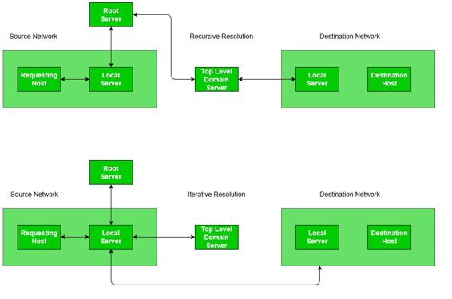

Prerequisite – Domain Name Server
Mapping a domain name to an IP Address is known as Name-Address Resolution. The Domain Name Server (DNS) Resolver performs this operation by consulting name servers.
In order to find a particular DNS the requesting host place it’s query to the Local DNS Server with a mapping request. If it has the information, the resolver is satisfied else the resolver is referred to other servers or other servers are asked to provide the information. After the resolver, gets the response, it checks whether the response is correct or not. If the response is correct, the response is passed to the process that requested it, else the name query fails.
A resolution can be of two types – iterative and recursive.
- Recursive Resolution –
Here, client requires the Local Server to give either the requested mapping or an error message. A DNS Query is generated by the application program to the resolver to fetch the destination IP Address. The Query is then forward to the local DNS Server. If it knows the IP Address, it sends a response to the resolver. Assuming, it does not know the IP Address, it sends the query to the root name server.
The root name server contains information of about at least one server of Top Level Domain. The query is then sent to the respective Top-Level Domain server. If it contains the mapping, the response is sent back to the root server and then to host’s local server. If it doesn’t contain the mapping, it should contain the IP Address of destination’s local DNS Server. The local DNS server knows the destination host’s IP Address. The information is then sent back to the top-level domain server, then to the root server and then to the host’s Local DNS Server and finally to the host.

- Iterative Resolution –
The main difference between iterative and recursive resolution is that, here each server that does not know the mapping sends the IP Address of the next server to the one requested it. Here, client allows the server to return the best answer it can give as a match or as a referral. A DNS Query is generated by the application program to the resolver to fetch the destination IP Address. The Query is then forward to the local DNS Server. Assuming, it does not know the IP Address, it sends the query to the root name server.
The root name server returns the IP Address of the Top-Level Domain Server to the Local Server. The Top-Level Domain server is contacted by Local Server and it returns either the IP of the destination host or its local DNS Server. If it returns the server’s address, then by contacting the destination’s Local DNS Server, we get the IP Address of the destination host. The response/mapping is then passed from host’s local DNS server to the resolver and then finally to the host.
Caching Mechanism –
In both iterative and recursive resolution, after a server asks a mapping request from another server, it receives the response and it stores this information in the Cache memory before sending it to the client. This is done to lower the search time it takes for a server to check the IP Address in its Database. So, from the next time, if a request comes to the server, it first checks its cache memory and tries to resolve the request. The response is marked as Unauthoritative to inform the client that the response is from Cache. The only way caching can be problematic is when server caches the mapping for a long time and the mapping gets outdated. However, there are techniques to resolve this like using TTL.